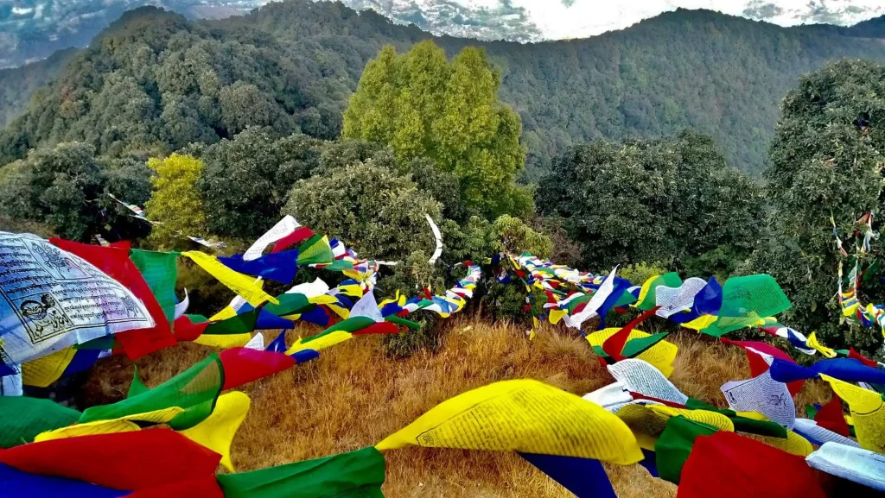
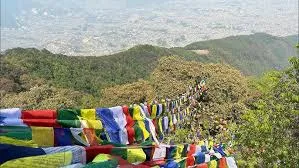
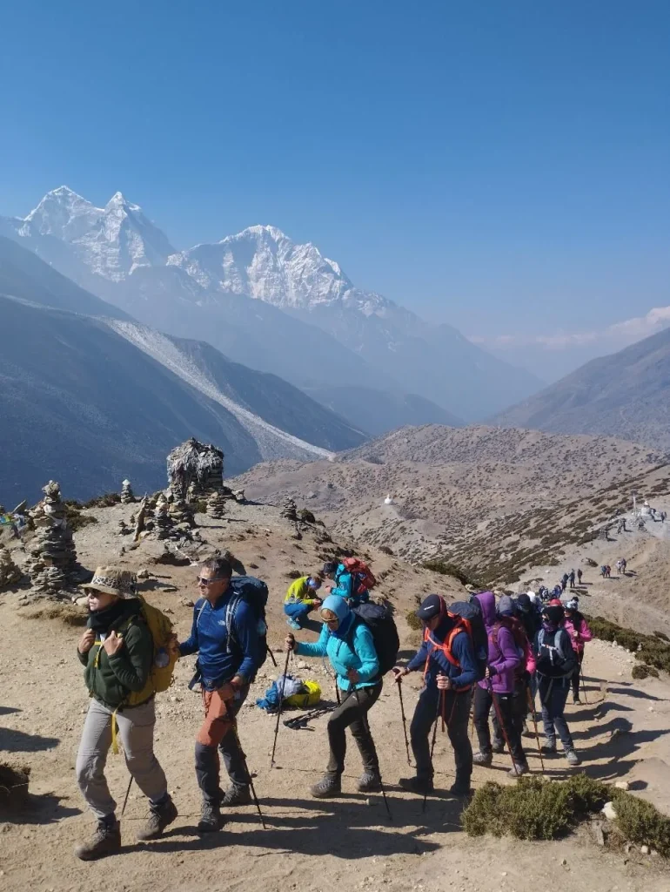

Why Hike the Kathmandu Valley Rim? The Gateway to Himalayan Trekking

While most international travelers view Kathmandu merely as a noisy, dust-choked transit hub on their way to Everest Base Camp or the Annapurna Circuit, seasoned Himalayan hikers know a secret: the valley rim holds some of the finest accessible day hikes in South Asia.
Rising steeply from the ancient Newari valley floor (1,350m / 4,430ft) to sub-alpine ridgelines between 2,100m and 2,782m, the hills surrounding Kathmandu are blanketed in dense oak, pine, and scarlet rhododendron forests protected within national parks and community reserves. Within a 45-minute drive from the tourist center of Thamel, you can step off asphalt roads and onto ancient pilgrimage trails where the only sounds are fluttering Buddhist prayer flags, singing laughingthrushes, and mountain breezes.
These trails serve three distinct purposes for travelers:
- Pre-Trek Conditioning & Acclimatization: If you are arriving from sea level, tackling 600m to 1,200m of continuous stone stairs in Shivapuri or Phulchowki tests your boots, breaks in your daypack, and stimulates red blood cell production before flying into Lukla (2,846m).
- Immediate Nature Escape: Kathmandu's urban congestion can be intense. Escaping into the tranquil pine groves of Champadevi or the oak canopies of Nagarjun restores mental clarity in hours.
- Himalayan Panoramas Without Domestic Flights: On crisp autumn, winter, and spring mornings, the northern ridge offers an unbroken 180-degree panorama of over 20 Himalayan giants spanning from the Annapurnas and Manaslu in the west, past Ganesh Himal and Langtang Lirung, to Dorje Lakpa, Gaurishankar, and even distant glimpses of Mt. Everest in the east.
"Always start your Kathmandu valley day hike before 7:30 AM. Himalayan mountain views are sharpest between 7:00 AM and 10:30 AM. By midday, valley heat causes thermal updrafts that pull atmospheric haze and clouds over the snow peaks. Early starts also ensure you return before late-afternoon highway traffic peaks." — Ang Tshering Sherpa, 5x Everest Summitter
1. Shivapuri Peak (2,732m) & Bagdwar: Sacred Waters & Ancient Hermitages

Dominating the northern skyline of Kathmandu, Shivapuri Peak (2,732m / 8,963ft) is the second-highest hill on the valley rim and arguably the most spiritually significant day hike in Nepal. Situated entirely within the pristine boundaries of Shivapuri Nagarjun National Park, this trail climbs through dramatic ecological zones from subtropical pine into cool moss-draped cloud forest.
Trail Breakdown & Key Waypoints
- Trailhead (Muhan Pokhari Gate): Located near Budhanilkantha Temple (1,450m), where you register with the Nepal Army checkpoint and purchase park permits.
- Nagi Gompa (2,330m): A tranquil Tibetan Buddhist nunnery perched on a sunny hillside. Over 100 nuns live and practice here. The monastery courtyard offers sweeping views over Kathmandu and serves as an ideal tea rest stop.
- Bagdwar (2,525m): The sacred physical source of the holy Bagmati River. Here, pure glacial-filtered water spouts from carved stone gargoyles inside a peaceful stone hermitage where Hindu sadhus and Buddhist yogis have meditated for centuries.
- Shivapuri Summit (2,732m): A broad, forested crest marked by a stone statue of the revered Hindu ascetic Shivapuri Baba and fluttering strings of prayer flags. A clearing on the northern edge reveals breathtaking views of Langtang Lirung (7,227m), Ganesh Himal (7,422m), and Dorje Lakpa (6,966m).
| Parameter | Trail Metric | Practical Advice |
|---|---|---|
| Total Distance | 16 km (9.9 miles) round-trip | Loop possible via Nagi Gompa up, direct stairs down |
| Duration | 5 to 7 hours of active walking | Pack a hearty lunch; minimal food past Nagi Gompa |
| Elevation Gain | +1,380 meters (+4,527 ft) | Over 3,000 stone steps; trekking poles recommended |
| Difficulty | Strenuous (High cardiovascular demand) | Excellent training for Annapurna or Everest climbs |
2. Champadevi Ridge Hike (2,285m): Pine-Scented Southern Rim Traverse

If you want sweeping panoramic views with less knee-pounding stone stairs than Shivapuri, the Champadevi Ridge Hike (2,285m / 7,497ft) on Kathmandu's southwestern rim is the premier choice. Known for its breezy pine forests and sacred hilltop shrine dedicated to Goddess Champa, this route offers one of the best vantage points in Nepal for viewing the entire valley bowl in a single frame.
Trail Description & Route Options
The most popular approach begins above the historic Newar pilgrimage town of Pharping, near the scenic Hattiban Resort (1,850m). From here, a well-defined dirt singletrack switchbacks through towering chir pines and aromatic wild lemon grass.
As you gain the crest of the ridge, the forest opens into a magnificent ridgeline traverse. To your right (south), you look down upon the terraced valleys of Makwanpur and the winding Kanti Highway; to your left (north), the entire Kathmandu metropolis sprawls across the valley floor, framed by the white battlements of the Ganesh, Langtang, and Jugal Himal massifs.
Route Option A: Hattiban In-and-Out
- Distance: 11 km round-trip
- Duration: 3.5 to 4.5 hours
- Trail Surface: Gradual dirt trail and natural stone steps
- Highlights: Shaded pine ascent, post-hike lunch on Hattiban Resort's mountain-view terrace
Route Option B: Full Ridge to Chandragiri
- Distance: 19 km traverse
- Duration: 7 to 8 hours
- Trail Surface: Narrow ridgeline trails with undulating ascents
- Highlights: Continues past Bhasmasur peak to Chandragiri Cable Car station
3. Nagarjun Jamacho Peak (2,128m): Sacred Forest Sanctuary & Watchtower

Located just 4 kilometers northwest of Thamel, Nagarjun Hill (Jamacho Peak, 2,128m / 6,981ft) is Kathmandu's closest and most convenient wilderness day hike. Legend holds that the great Buddhist philosopher Acharya Nagarjuna meditated in a cliff cave here, giving the forested hill its spiritual aura.
The hike begins at the Fulbari Military Gate along the Balaju bypass road. After registering with the park wardens, you enter a peaceful sanctuary of sal trees, broadleaf laurels, and wild orchids. The trail ascends via a steady, well-engineered stone staircase that switchbacks directly up the eastern flank of the mountain.
Summit Highlights: Jamacho Gompa & View Tower
Upon reaching the 2,128m summit, you emerge into a sacred courtyard containing Jamacho Buddhist Gompa, draped in centuries of prayer flags. Adjacent to the shrine stands a two-story steel observation tower. Climbing to the top deck reveals an astonishing 360-degree panorama:
- Northwest: The massive white block of Mt. Manaslu (8,163m)—the world's eighth-highest mountain—shines clearly alongside Annapurna II on bluebird winter days.
- North: The towering jagged wall of Ganesh Himal (7,422m) and Langtang Lirung (7,227m).
- Southeast: Direct bird's-eye view looking down into the bustling streets of Balaju, Swayambhunath (Monkey Temple), and central Kathmandu.
Distance: 9 km round-trip · Elevation Gain: +650m · Duration: 3.5 to 4.5 hours · Difficulty: Moderate · Park Fee: NPR 1,000 for foreigners. There are zero shops on the trail; carry at least 2 liters of water and energy snacks.
4. Sundarijal to Chisapani & Nagarkot: The Classic Multi-Day Himalayan Ridge Walk

If you have two or three days to spare and want a true miniature Himalayan trek with rustic teahouse accommodation, the Sundarijal → Chisapani → Nagarkot traverse is the undisputed champion. This route forms the scenic southern threshold of the famous Helambu and Langtang trekking circuits.
Day-by-Day Route Itinerary
- Day 1: Sundarijal to Chisapani (13 km, 4–5 hrs, +815m): You start at Sundarijal (1,350m), following roaring waterfalls and the city's historic colonial-era water pipeline up into Shivapuri National Park. The trail passes through the charming Tamang hamlet of Mulkharka before climbing deeply shaded oak and rhododendron forests to Chisapani (2,165m), where rustic teahouses look out across Langtang and Jugal Himal.
- Day 2: Chisapani to Nagarkot (19 km, 6–7 hrs, undulating ridge): A scenic traverse following quiet ridge jeep tracks and singletrack trails through Chauki Bhanjyang and Jharuwa village. You wind through terraced millet fields, pine forests, and quiet farming settlements, arriving in the famous hill station of Nagarkot (2,175m) in time for sunset.
- Day 3 (Optional): Nagarkot Sunrise & Hike to Changunarayan (10 km, 3–4 hrs descent): After watching the morning sun illuminate peaks from Dhaulagiri in the west to Mt. Everest in the far east, descend through pine hills to Changunarayan Temple (UNESCO World Heritage Site, built in the 5th century AD) for a scenic cultural finish.
Want seamless logistics with pre-booked teahouses, luggage transfer, and a licensed mountain guide? Explore our official Chisapani Nagarkot 3-Day Trek Package.
5. Chandragiri Hills (2,551m) to Chitlang Valley: Cable Car Ascent & Ancient Trade Route

Rising majestically to the southwest, Chandragiri Hill (2,551m / 8,369ft) offers one of Nepal's most unique combinations of modern mountain leisure and rich historical pilgrimage. It was from this very summit that King Prithvi Narayan Shah first gazed upon the wealthy kingdoms of Kathmandu, Patan, and Bhaktapur in the 18th century and resolved to unify Nepal.
Two Ways to Reach the Summit
Hikers have the choice of taking the modern 2.5-kilometer cable car from Thankot up to the peak in 10 minutes, or tackling the steep, exhilarating 3-hour forest climb through sub-tropical oak woodland.
The Legendary Descent to Chitlang
From the Chandragiri ridge and Bhaleshwor Mahadev Temple, the trail plunges south along the historic ancient trade route to India. Before Nepal's first highway (Tribhuvan Highway) opened in 1956, this was the primary overland artery into the capital. Every visitor—including foreign diplomats, mountaineers, and even the royal family's luxury motorcars—had to walk this path. The vehicles were stripped of wheels and carried over the pass on wooden scaffolding borne by 64 to 96 porters!
After a 2.5-hour descent through whispering pines, you emerge into the pastoral Eden of Chitlang, famous for its organic goat cheese farms, heritage Newar homestays, and quiet apple orchards.
6. Phulchowki Peak (2,782m): The Roof of the Valley & Botanical Haven

Literally translating to "Hill of Flowers", Phulchowki (2,782m / 9,127ft) is the crown monarch of the Kathmandu Valley rim. Located in the southeastern corner of the valley above the quiet suburb of Godavari (Lalitpur), this mountain is renowned as one of South Asia's richest biodiversity hotspots.
Nature, Snow & Wildlife
- Birdwatcher's Paradise: Ornithologists from around the world flock to Phulchowki. Over 300 bird species live on its slopes, including the endangered Spiny Babbler (Nepal's only endemic bird), cutias, laughingthrushes, and colorful sunbirds.
- Spring Rhododendrons (March–April): The entire upper mountain bursts into bloom with crimson, scarlet, and pink rhododendron trees standing up to 15 meters tall.
- Winter Snow (January–February): As the highest peak on the rim, Phulchowki is often the only place near Kathmandu that receives seasonal snowfall, drawing enthusiastic locals to build snowmen on its forested summit.
Distance: 18 km round-trip · Elevation Gain: +1,280m · Duration: 6 to 7 hours · Difficulty: Strenuous. The trail begins directly outside the gates of Godavari National Botanical Gardens. A single-lane winding dirt road also leads to the top, so you can hike up the forest trails and take a pre-booked jeep down if your knees are fatigued.
7. Nagarkot to Dhulikhel & Namo Buddha: Ancient Newar Villages & Holy Monasteries

For travelers seeking gentle undulating terrain, authentic rural village culture, and world-class Tibetan Buddhist spirituality, the Nagarkot to Dhulikhel and Namo Buddha ridge walk offers an extraordinary cultural traverse east of the capital.
Trail Highlights
Starting from Nagarkot, this 16-kilometer trail leaves behind vehicular roads to wind through peaceful Tamang and Chhetri farming settlements like Rhawa and Kashibhanjyang. You walk through terraced fields of yellow mustard and green cauliflower, shaded by fragrant pine woodlands.
You arrive in the ancient Newari merchant town of Dhulikhel, renowned for its 500-year-old carved wooden windows, narrow cobbled courtyards, and grand panoramas of the Rolwaling and Langtang mountain chains.
From Dhulikhel, a further 3-hour hike across terraced ridges brings you to Namo Buddha (Thrangu Tashi Yangtse Monastery), one of Nepal's three holiest Buddhist pilgrimage sites. Perched dramatically atop a high ridge, this massive, golden-roofed monastery complex houses over 250 monks and commemorates the spot where Buddha, in a former life, gave his body to feed a starving tigress and her cubs.
Master Comparison Matrix: The 7 Best Kathmandu Day Hikes
To help you select the trail that best fits your travel schedule, fitness level, and mountain photography goals, here is our comprehensive side-by-side comparison matrix:
| Hike Name | Trailhead Access | Summit Alt. | Distance / Time | Difficulty | Mountain Highlights | Permit Required |
|---|---|---|---|---|---|---|
| Shivapuri Peak & Bagdwar | Budhanilkantha Gate (12km north) | 2,732m | 16 km · 5–7 hrs | Strenuous (+1,380m) | Langtang Lirung, Ganesh Himal, Bagmati source | Shivapuri NP (NPR 1,000) |
| Champadevi Ridge | Hattiban / Pharping (20km south) | 2,285m | 11 km · 4–5 hrs | Moderate (+750m) | 180° Valley bowl, Jugal & Langtang range | Community fee (NPR 100) |
| Nagarjun Jamacho | Fulbari Gate, Balaju (5km NW) | 2,128m | 9 km · 3.5–4.5 hrs | Moderate (+650m) | Mt. Manaslu, Ganesh Himal, Monkey Temple view | Shivapuri NP (NPR 1,000) |
| Sundarijal–Chisapani | Sundarijal Reservoir (15km NE) | 2,165m | 13 km · 4–5 hrs | Moderate (+815m) | Waterfalls, Tamang villages, sunrise teahouses | Shivapuri NP (NPR 1,000) |
| Chandragiri to Chitlang | Thankot Cable Car (14km SW) | 2,551m | 12 km · 4–6 hrs | Moderate to Strenuous | Api to Everest panorama, historic car trail | Cable car fee / Free trail |
| Phulchowki Peak | Godavari Gardens (18km SE) | 2,782m | 18 km · 6–7 hrs | Strenuous (+1,280m) | Highest valley point, 300+ bird species, snow | Botanical fee (NPR 500) |
| Nagarkot to Dhulikhel | Nagarkot Tower (32km east) | 2,175m | 16 km · 5–6 hrs | Easy to Moderate | Gaurishankar, Rolwaling, Newar heritage | Nagarkot fee (NPR 350) |
Seasonal Weather Windows: When to Hike for Crystal Mountain Clarity
The experience of hiking in Kathmandu depends entirely on seasonal air clarity, temperatures, and monsoon rain patterns. Understanding seasonal microclimates ensures you get crystal-clear mountain views instead of staring into gray clouds.
Seasonal Hiking Breakdown
- Autumn (October to November) — Peak Gold Standard: The absolute best time for hiking near Kathmandu. Post-monsoon atmospheric clearing scrubs the air clean of dust and haze. Daytime hiking temperatures are a comfortable 18°C to 22°C (64°F–72°F) under deep azure skies. Every day hike offers front-row views of Himalayan snow peaks.
- Winter (December to February) — The Temperature Inversion Phenomenon: Winter offers outstanding, crisp mountain views, but with a unique meteorological twist: the Kathmandu temperature inversion. On winter mornings, cold, dense air and woodsmoke trap heavy fog inside the Kathmandu Valley bowl until 9:30 AM. But when you climb above 1,700 meters onto the ridges of Shivapuri, Champadevi, or Nagarkot, you emerge above the cloud sea into brilliant, warm sunshine! Ridge temperatures are often warmer and sunnier than the damp city below.
- Spring (March to May) — Wildflowers & Wild Rhododendrons: Warmer weather (22°C–28°C) brings blooming scarlet and pink rhododendrons and wild orchids across Phulchowki and Shivapuri. Morning visibility is excellent, though pre-monsoon dust can build in the afternoons.
- Monsoon (June to September) — Lush Greenery, Leeches & Mud: Heavy rainfall creates swollen waterfalls and lush emerald jungle, but clouds obscure the mountain peaks. Mountain trails become slippery clay and are populated by active forest leeches (juka). Not recommended for day hikes unless you carry salt and leech socks.
| Season / Month | Avg Daytime Temp | Mountain Visibility | Trail Conditions | Recommended Hikes |
|---|---|---|---|---|
| Oct – Nov (Autumn) | 18°C – 22°C | 5 / 5 (Exceptional) | Dry, firm, pleasant | Shivapuri, Chisapani, Champadevi |
| Dec – Feb (Winter) | 12°C – 16°C | 4.5 / 5 (Clear above fog) | Cold mornings, dry trails | Nagarjun, Champadevi, Phulchowki |
| Mar – May (Spring) | 22°C – 28°C | 3.5 / 5 (Best in mornings) | Warm, blooming flowers | Phulchowki, Nagarkot–Dhulikhel |
| Jun – Sep (Monsoon) | 24°C – 29°C | 1.5 / 5 (Clouded / Rainy) | Muddy, slippery, leeches | Sundarijal waterfalls (rain gear) |
Permits, Entry Fees & Protected Area Regulations
Most premier hiking trails on Kathmandu's northern and western rim lie within Shivapuri Nagarjun National Park, which is actively guarded by the Nepal Army. Entry requires purchasing an official park permit and adhering to strict conservation regulations.
National Park Fee Structure (Per Person)
| Protected Area / Checkpoint | Foreign Citizens | SAARC Citizens | Nepali Citizens |
|---|---|---|---|
| Shivapuri Nagarjun National Park (Budhanilkantha, Sundarijal, Nagarjun) | NPR 1,000 + 13% VAT (~$9 USD) | NPR 600 + VAT (~$5 USD) | NPR 100 |
| Nagarkot Municipality Entry Fee | NPR 350 (~$2.70 USD) | NPR 250 (~$1.90 USD) | Free |
| Godavari Botanical Gardens (Phulchowki base) | NPR 500 (~$3.80 USD) | NPR 250 (~$1.90 USD) | NPR 50 |
| Chandragiri Cable Car (One-way / Round-trip) | $13 USD / $22 USD | NPR 700 / NPR 1,120 | NPR 475 / NPR 799 |
Daypack Packing Checklist: What to Carry for Kathmandu Hills
Because these are day hikes where you return to a comfortable Kathmandu hotel bed in the evening, your daypack should be light, streamlined, and comfortable (18 to 25 liters capacity).
Footwear & Technical Gear
- Trail Running Shoes or Light Hiking Boots: Heavy mountain boots are unnecessary. Well-cushioned trail runners with Vibram or sticky rubber lugs handle dry stone steps and dusty pine trails best.
- Trekking Poles (1 Pair): Crucial for saving your knees during steep descents down Shivapuri (3,000 steps) or Chandragiri.
- Daypack (20L–25L): With breathable mesh back panel and hip belt.
- Offline GPS Navigation: Download offline maps on Maps.me or Gaia GPS before departing; cell signal can drop in deep valleys.
Clothing & Trail Essentials
- Breathable Base Layer: Quick-dry merino wool or synthetic athletic t-shirt.
- Light Wind/Rain Shell: High ridges can be breezy; pack an ultra-light windbreaker or 2.5-layer Gore-Tex jacket.
- Hydration (2 to 2.5 Liters): Reusable bottles or hydration bladder. Never rely on finding shops above the mid-mountain checkpoints.
- Cash in Nepali Rupees: Carry NPR 3,000 to 5,000 in small bills for park permits, fruit stalls, teahouses, and return taxi fares. Credit cards are never accepted on trails.
Trailhead Transportation & Navigation: How to Reach the Trails
Getting to and from trailheads around the Kathmandu Valley rim is straightforward once you understand local transport options:
- Ride-Sharing Apps (Pathao & InDrive): The most economical and convenient option for solo hikers and couples. Download the Pathao or InDrive apps on your smartphone with a local Ncell or Nepal Telecom SIM card. You can book motorbikes or private cars directly to trailheads like Budhanilkantha Gate (NPR 400–700 / $3–$5 USD) or Fulbari Gate (NPR 300–500 / $2–$4 USD).
- Private Day Taxi Hire: For southern and eastern hikes like Phulchowki (Godavari), Champadevi (Pharping), or Nagarkot, hiring a taxi for a half-day or full-day round-trip (NPR 2,500 to 4,500 / $20–$35 USD) is recommended. The driver will wait for you at the trailhead and bring you back to your hotel without stressful return logistics.
- Public Microbuses: Adventurous backpackers can catch local microbuses from Ratna Park (Old Bus Park) or Gongabu Bus Terminal for NPR 30 to 50 ($0.30 USD). While cheap, they are crowded, stop frequently, and add 60 to 90 minutes to your travel time.
At remote trailheads like Godavari Botanical Gardens, Dakshinkali, or Sundarijal, finding an empty return taxi in the late afternoon (after 4:30 PM) can be difficult. Always negotiate a return pickup with your morning driver, or take their WhatsApp contact number before heading up the trail.
Frequently Asked Questions: Kathmandu Day Hikes
Which day hike near Kathmandu is best for complete beginners?
The Nagarjun Jamacho Peak (9 km round-trip) and the Champadevi hike from Hattiban Resort (11 km) are the best choices for beginners. Both feature well-maintained, clear paths, gentle to moderate inclines, and manageable elevation gains of 600m to 750m that can easily be completed in 3.5 to 4.5 hours at a leisurely pace.
Do I need a licensed guide to do day hikes near Kathmandu?
No. Unlike remote restricted trekking regions in Nepal (such as Manaslu, Mustang, and Nar Phu), day hikes around the Kathmandu Valley rim do not legally require a licensed guide. Trails like Shivapuri, Jamacho, and Chisapani are clearly marked and patrolled by national park rangers. However, hiring a local guide or booking an organized day trip adds immense cultural insight, flora/fauna identification, and seamless door-to-door transportation.
Are these hiking trails safe for solo female travelers?
Trails inside protected areas with military checkpoints—such as Shivapuri Peak, Nagi Gompa, Nagarjun Jamacho, and Chandragiri—are very safe and frequented by local Nepali families, students, and expatriates. For more isolated trails like Phulchowki or deep rural segments of Nagarkot–Dhulikhel, solo female hikers are advised to hike in pairs or hire a reputable local guide to avoid navigational confusion on unmapped cow trails.
Can I see Mount Everest from hiking places near Kathmandu?
Yes, on clear autumn and winter mornings (October to January), distant glimpses of Mount Everest (8,848.86m) can be seen from the eastern ridgelines of Nagarkot View Tower (2,175m) and from the summit ridge of Chandragiri Hills (2,551m). Because Everest is over 160 kilometers away, it appears as a small, sharp triangular pyramid peeking over the intervening Rolwaling peaks, best viewed with binoculars or a telephoto zoom lens.
Are there dangerous wild animals in Shivapuri National Park?
Shivapuri Nagarjun National Park is home to Himalayan black bears, common leopards, barking deer, wild boars, and rhesus macaques. Wild animals naturally avoid daylight human trails. Attacks on hikers are virtually unheard of. To stay safe, stick strictly to established walking trails, hike during daylight hours between 7:00 AM and 4:30 PM, and never hike alone deep into the unpatrolled northern wilderness.
Which day hike is the most physically challenging?
The hardest single-day hikes are Shivapuri Peak (16 km, +1,380m vertical gain via over 3,000 steep stone stairs) and Phulchowki Peak (18 km, +1,280m gain). Both require 6 to 7 hours of strenuous continuous uphill endurance, making them premier physical tests for serious mountaineers.
Where can I find drinking water and meals on these hikes?
Trails that pass through villages—such as Sundarijal–Chisapani, Nagarkot–Dhulikhel, and Champadevi—have roadside tea shops serving hot tea, bottled beverages, instant noodles, and fresh Dal Bhat. However, isolated forested peaks like Shivapuri summit, Jamacho Peak, and Phulchowki have zero commercial shops past the trailhead checkpoints. You must carry 2 to 2.5 liters of water and your own energy bars or packed lunch.
What is the best way to return to Thamel after finishing a hike?
For hikes that finish at urban edges (like Budhanilkantha or Balaju), booking a ride on Pathao or InDrive takes less than 10 minutes. For distant trailheads like Godavari, Pharping, or Chisapani, arrange return transportation with your morning taxi driver beforehand, or ask your hotel to book a private round-trip car service.

Ready to Experience the Himalayas?
Whether you are preparing for high-altitude trekking, cultural circuits, or alpine summit expeditions, start planning a bespoke journey tailored to your fitness, travel season, and style.